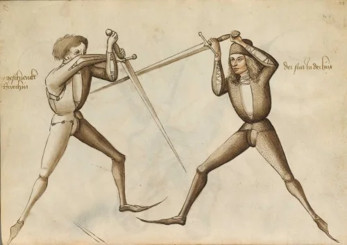

Geschichte
Historical European Martial Arts (HEMA) bezieht sich auf die Wiederentdeckung und Wiederbelebung der Kampfkünste, die in Europa von der Antike bis zur frühen Neuzeit praktiziert wurden. Die Entstehung von HEMA als moderne Bewegung begann in den 1990er Jahren, als Enthusiasten begannen, historische Fechtbücher und Manuskripte zu erforschen, zu übersetzen und zu interpretieren.
Diese Quellen, darunter Werke von Meistern wie Johannes Liechtenauer, Fiore dei Liberi und Joachim Meyer, bieten detaillierte Anleitungen zu verschiedenen Waffentechniken und unbewaffnetem Kampf.
Mit der wachsenden Popularität des Internets konnten Forscher und Praktizierende Wissen austauschen und sich vernetzen, was zur Gründung von HEMA-Vereinen und -Organisationen weltweit führte. Veranstaltungen wie die International Swordfighting and Martial Arts Convention (ISMAC) und die HEMA Alliance trugen dazu bei, die Gemeinschaft zu stärken und Standards für Training und Wettkämpfe zu setzen
Die Bewegung hat sich seither weiterentwickelt und umfasst heute ein breites Spektrum an Disziplinen, von Schwertkampf über Ringen bis hin zu Stangenwaffen.
HEMA bietet nicht nur ein Fenster in die Vergangenheit europäischer Kampfkünste, sondern fördert auch die körperliche Fitness, das historische Verständnis und den sportlichen Wettbewerb.
Durch regelmäßiges Training, Turniere und Workshops beleben Praktizierende die traditionellen Techniken und Prinzipien, die einst auf europäischen Schlachtfeldern und in Duellen angewendet wurden.
